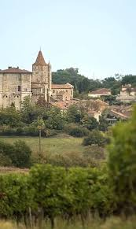

Château de
LavardensFief des comtes d'Armagnac


⟹ Sites Emblématiques ⟸
Édifié dès le XIIe siècle sur un éperon rocheux dominant la campagne gersoise, le château de Lavardens fut le fief des comtes d'Armagnac, qui y bénéficiaient d'un vaste champ de vision propice à la surveillance du territoire. Cette forteresse médiévale, plusieurs fois attaquée au fil des guerres qui opposèrent la maison d'Armagnac au royaume de France, ne survécut que partiellement à ces siècles de conflits.

Au XVIIe siècle, Antoine de Roquelaure, maréchal de France et compagnon d'Henri IV, entreprend de reconstruire l'édifice sur les ruines de la forteresse comtale, par amour pour sa jeune épouse Suzanne de Bassabat. Mais en 1653, une épidémie de peste dévaste le village et le chantier du majestueux vaisseau de pierres blanches n'est jamais achevé : le château reste figé, à l'état de gros œuvre, jusqu'à aujourd'hui.
Vendu à douze familles après la Révolution, faute de copropriété organisée, l'édifice se dégrade peu à peu jusqu'à sa sauvegarde, dans les années 1960, par une poignée de passionnés. Classé monument historique en 1961, il est aujourd'hui géré par une association qui en fait un centre d'art vivant.
Repères pour approfondir. Mentionné dès 1140 dans le cartulaire noir de la cathédrale d'Auch, Lavardens est d'abord une forteresse des comtes d'Armagnac. Sa position sur un éperon rocheux lui donne un rôle stratégique majeur dans la surveillance de la campagne environnante.
La forteresse subit un tournant décisif en 1496, lorsqu'elle est prise par les troupes de Charles VIII et partiellement détruite. En 1585, la seigneurie est attribuée à Antoine de Roquelaure, proche d'Henri IV. À partir de 1608, celui-ci entreprend de transformer les vestiges médiévaux en une résidence moderne destinée notamment à Suzanne de Bassabat et à leur famille.
L'inachèvement de 1653 est aujourd'hui une clé de lecture du monument. Il permet de comprendre le chantier presque « à nu » : grandes galeries, volumes voûtés, tours occidentales en porte-à-faux sur des trompes et exceptionnel ensemble de pavements en brique rose et pierre claire. Dix-sept salles présentent des dessins de sol différents, témoignage rare du raffinement prévu pour la demeure.
Après la Révolution, le château est vidé de son mobilier puis morcelé. La toiture s'effondre en 1923 et l'édifice frôle la disparition au XXe siècle. Sa sauvegarde doit beaucoup aux bénévoles et aux campagnes de restauration engagées avant son ouverture progressive au public. Cette histoire récente fait de Lavardens un exemple remarquable de patrimoine sauvé par la mobilisation locale.
Sources documentaires : site officiel du Château de Lavardens · architecture et restauration.
Par son aspect imposant, le château fait peu de concessions au décor extérieur, mais il déploie une véritable prouesse technique avec ses tours ouest en encorbellement, posées en porte-à-faux sur les contreforts médiévaux grâce à des trompes. Sur la façade sud, une galerie de bois reposait autrefois sur des corbeaux de pierre.
Vidé de son mobilier depuis la Révolution, le château révèle aujourd'hui la nudité de sa pierre : pavements ocre et brique, galeries extérieures et immenses croisées composent un décor à la fois austère et raffiné.
— Association de sauvegarde du château de LavardensDevenu centre d'art, l'édifice accueille chaque année des expositions de céramique, de verrerie ou de santons, faisant dialoguer la création contemporaine avec l'architecture inachevée du XVIIe siècle.
Village de Lavardens ruelles fleuries, remparts et maisons de pierre blonde composent l'un des Plus Beaux Villages de France.
Auch à une vingtaine de minutes, la cathédrale Sainte-Marie, l'escalier monumental et la statue de d'Artagnan complètent la découverte du Gers.
Circuit du château un itinéraire de randonnée de 10 km serpente autour de Lavardens et de ses collines vertes.
Vignoble gersois dégustations de vins de pays des Côtes de Gascogne proposées à proximité du village.